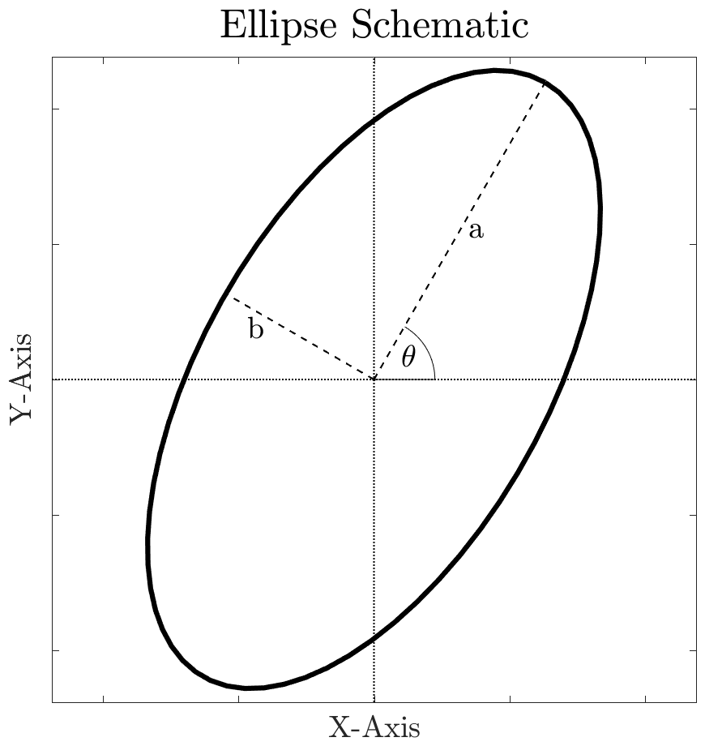
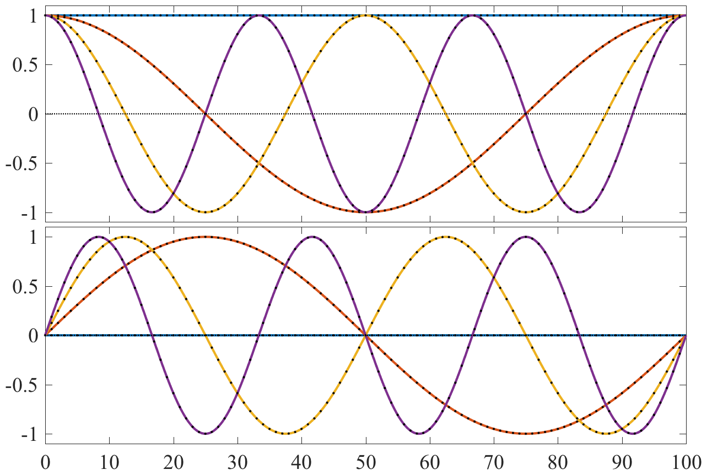
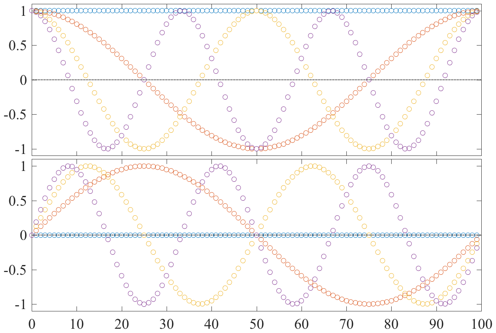
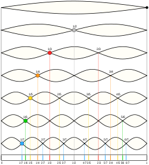
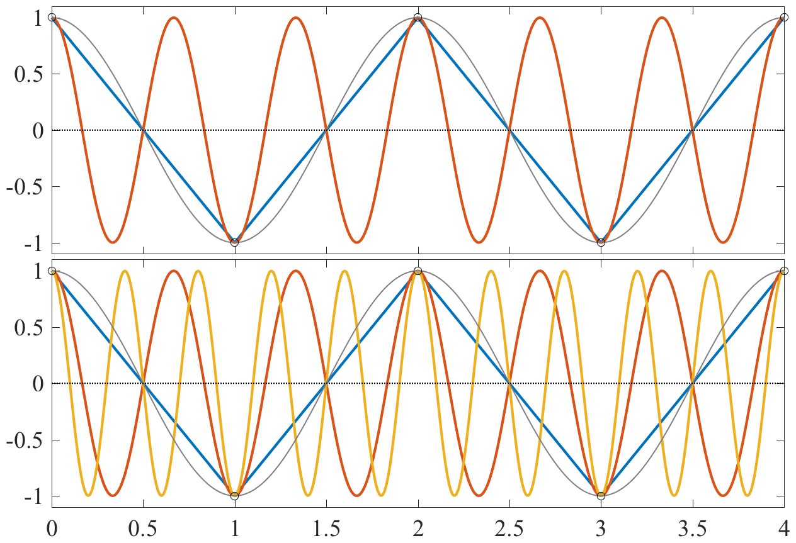
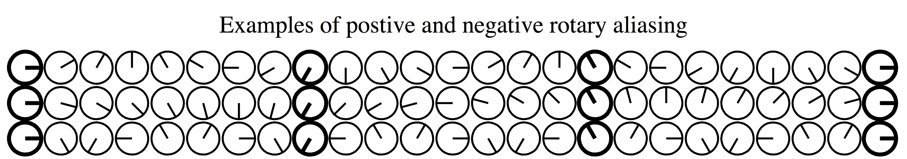
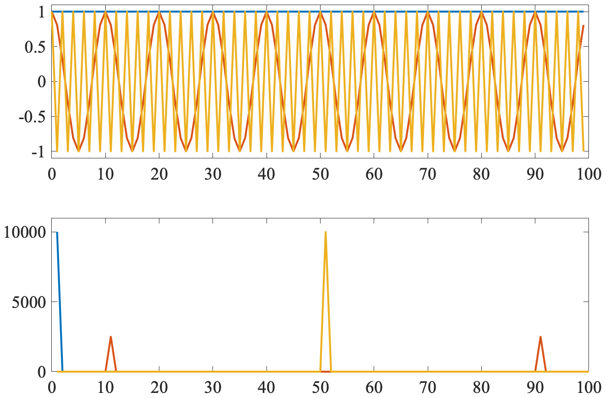

name: discretefourier class: center,middle, .toc[[✧](../index.html)] .title[The Discrete Fourier Transform] --- class: left, .toc[[✧](../index.html)] # Homework solutions Deriving the trigonometic sum formulas `\begin{eqnarray} \cos(A+B) &=& \cos A \cos B -\sin A \sin B \\ \sin(A+B) &=& \cos A\sin B +\sin A \cos B \end{eqnarray}` -- `\[e^{i (A+B)} =e^{i A}e^{i B}\]` -- This implies from Euler's formula, `$e^{ix}=\cos x + i \sin x$`, that `\[ \cos(A+B) +i \sin(A+B) = \left[\cos A +i \sin A\right]\left[\cos B +i \sin B\right] \]` -- Multiplying out the right-hand-side, we find `\begin{multline}\cos(A+B) +i \sin(A+B) =\\ \cos A\cos B -\sin A \sin B +i\left[\cos A \sin B + \cos B\sin A\right] \end{multline}` Taking the real and imaginary parts, we have the first two equations. --- class: left, .toc[[✧](../index.html)] # Homework solutions Deriving the product formula `\begin{equation} \cos(A)\cos(B) = \frac{1}{2}\left[\cos(A+B)+\cos(A-B)\right] \end{equation}` -- Start with the sum formula `\[\cos(A+B) = \cos A \cos B -\sin A \sin B \]` -- Substituting `$-B$` in place of `$B$` leads to the difference formula `\[\cos(A-B) = \cos A \cos B +\sin A \sin B \]` because `$\sin B$` changes sign but `$\cos B$` does not. -- Add these two formulas to obtain `\[ \cos (A+B) + \cos (A-B) = 2\cos A \cos B \]` which rearranges to give the sum formula. --- class: left, .toc[[✧](../index.html)] # Homework solutions Similarly, the `$\sin$` version of the product theorem is `\begin{equation} \sin(A)\sin(B) = \frac{1}{2}\left[\cos(A-B)-\cos(A+B)\right] \end{equation}` -- Starting again with the product and sum formulas `\[\cos(A+B) = \cos A \cos B -\sin A \sin B \]` `\[\cos(A-B) = \cos A \cos B +\sin A \sin B \]` -- Now subtracting these instead of adding them, we have `\[ \cos (A+B) - \cos (A-B) = -2\sin A \sin B \]` -- These exercises have shown how Euler's formula `\[e^{ix}=\cos x + i \sin x\]` can be used to readily derive common trigonometic identities. --- class: left, .toc[[✧](../index.html)] # Homework solutions Next we'll look at time derivatives of the two sides Euler's formula `\[e^{i\omega t}=\cos (\omega t) + i \sin \omega t\]` -- First deriviative `\[ i\omega e^{i\omega t} \quad?\quad -\omega \sin (\omega t) + i \omega\cos \omega t\]` -- Second deriviative `\[ -\omega^2 e^{i\omega t} \quad ?\quad -\omega^2 \cos (\omega t) - i \omega^2\sin \omega t\]` -- `$n$th` deriviative `\[ (i\omega)^n e^{i\omega t} \quad ?\quad (i\omega)^n \cos (\omega t) + i (i\omega)^n \sin \omega t\]` --- class: left, .toc[[✧](../index.html)] # Homework solutions Taylor series of cosine about zero: `\[\cos(\omega t)= 1 - \frac{1}{2} \omega^2 t^2 + \ldots = \sum_{n=0}^\infty \frac{1}{(2n)!}(-1)^n(\omega t)^{2n}\]` -- Taylor series of sin about zero: `\[\sin(\omega t)= \omega t - \frac{1}{6} \omega^3 t^3 + \ldots = \sum_{n=0}^\infty \frac{1}{(2n+1)!}(-1)^n(\omega t)^{2n+1}\]` -- Taylor series of the complex exponential about zero: `\[e^{i\omega t}= 1 + i \omega t - \frac{1}{2} \omega^2 t^2 -i \frac{1}{6} \omega^3 t^3\ldots = \sum_{n=0}^\infty \frac{1}{n!}(i\omega t)^n\]` -- We note that the even terms in this last summation correspond to those of `$\cos$`, whereas the odd terms correspond to those of `$i\sin$`. --- class: left, .toc[[✧](../index.html)] # Homework solutions The point of this exercise is to show you one way that you can verify Euler's formula for yourself `\[e^{i\omega t}=\cos (\omega t) + i \sin \omega t\]` by Taylor-expanding the left- and right-hand sides separately, and showing that they agree. <!--`\[ \frac{d}{dt} e^{i\omega t} = i\omega e^{i\omega t}, \quad\quad \frac{d^2}{dt^2} e^{i\omega t} = -\omega^2 e^{i\omega t}, \quad\quad \frac{d^n}{dt^n} e^{i\omega t} = (i\omega)^n e^{i\omega t} \]`--> <!--\frac{d^3}{dt^3} e^{i\omega t} = -i\omega^3 e^{i\omega t}, \quad\quad \ldots--> --- class: center, .toc[[✧](../index.html)] # Homework solutions Finally I asked you to look at the equation `\[ z(t) = e^{i\theta} \left[a \cos \omega t + i b \sin\omega t\right] \]` What is this an equation for? --  This is the parametric equation for an ellipse with semi-axes lengths `$a$` and `$b$`, and orientation `$\theta$`. --- class: left, .toc[[✧](../index.html)] # Homework solutions Let's also consider the sum of a positively-rotating and negatively-rotating circle `\[ z(t) = P e^{i\phi } e^{i\omega t} + N e^{i\phi } e^{-i\omega t} \]` What is this an equation for? -- `\[ z(t) = P e^{i\phi } [\cos \omega t +i\sin \omega t] + N e^{i\phi } [\cos \omega t -i\sin \omega t ] \]` -- `\[ z(t) = e^{i\phi } \left[\left(P +N\right) \cos \omega t +i\left(P -N\right) \sin \omega t \right] \]` -- If we compare to the equation on the previous page `\[ z(t) = e^{i\theta} \left[a \cos \omega t + i b \sin\omega t\right] \]` We see that the sum of two opposite-rotating complex exponentials of the same frequency traces out an ellipse. This fundamental fact will inform how we see Fourier analysis. --- class: left, .toc[[✧](../index.html)] # Orientation In the last lecture we looked at two fundamental building blocks of Fourier analysis. The first is the complex exponential itself: `\[ e^{i\omega t}. \]` The second is the Euler's formula `\[ e^{i\omega t}=\cos(\omega t)+i \sin(\omega t) \]` which we use so often, we forget how deep and non-obvious it is. This lecture looks at a third building block, the Discrete Fourier Transform or DFT: `\[z_n=\frac{1}{N}\sum_{m=0}^{N-1} Z_m e^{i2\pi m n/N},\quad\quad\quad Z_m \equiv \sum_{n=0}^{N-1}z_n e^{-i2\pi m n/N}. \]` In this lecture, we will take this equation apart, and understand it hopefully on a deeper level. <!-- # In-Class Exercises Before continuing with theory, we will play around a bit in Matlab or Python, exploring some aspects of the discrete Fourier transform in practice. We will work in small groups on these exercises. Please make sure that everyone in your group agrees on each answer. 1. Constuct the even-length time series `$t=[0:1:99]$`. You are going to plot `$x(t)=\cos(2\pi f t)$` and also the discrete Fourier transform `$\mathrm{abs}(\mathrm{fft}(x(t)))$` for (a) `$f=0$` (b) `$f=1/10$` and (c) `$f=1/2$`. What do you see? At which locations in the frequency domain do you see something occurring in each of these three cases? Do you have an explanation? 2. Same as #1 but for `$z(t)=e^{i2\pi f t}$`. What has changed? 3. Same as #1 but for the odd-length time series `$t=[0:1:100]$`. What has changed? 4. As in #1 but for `$x(t)=\sin(2\pi f t)$` for (a) `$f=1/100$` (b) `$f=1/200$` and (c) `$f=1/400$`.--> <!-- (a) 1 (or 0) (b) 11 and 91 [10 and 90] (c) 51 [or 50]--> --- class: left, .toc[[✧](../index.html)] # In-Class Exercises Consider two variables called `$u$` and `$v$` which have the same units. These could be eastward and northward components of the wind or currents, or the temperature at two different locations, for example. 1. Sketch `$u=\cos(\omega t)$` and `$v=\sin(\omega t)$`. Also sketch `$u$` vs. `$v$` with `$u$` along the x-axis and `$v$` along the y-axis. 2. Do the same but for `$u=\cos(\omega t)$` and `$v=\cos(\omega t)$`. 2. Do the same but for `$u=\cos(\omega t)$` and `$v=2\cos(\omega t)$`. 3. Do the same but for `$u=\cos(\omega t)$` and `$v=0$`. -- This is an illustration of something called *polarization*. The pair of signals in (1) is said to be circularly polarized while the others are linearly polarized. --- class: left, .toc[[✧](../index.html)] # What's with the `$i$`? Why do we use `$i$`? It is simply a convenient way of grouping two variables. When we write `$u+iv$`, this means: “Put `$u$` along the x-axis and `$v$` along the y-axis.” There is then a very convenient shorthand `\[ \cos(\omega t)+i \sin(\omega t)=e^{i\omega t}\]` which helps us represent pairs of variables. Note that this implies `\[ \frac{1}{2}\left[e^{i\omega t} + e^{-i\omega t} \right]= \cos(\omega t)\]` `\[ \frac{1}{2}\left[Ae^{i\phi}e^{i\omega t} + Ae^{-i\phi}e^{-i\omega t} \right]= A\cos(\omega t+\phi)\]` which makes this useful for representing real-valued signals as well! --- class: left, .toc[[✧](../index.html)] # A Note on Discrete Time When we work with discrete time series over finite durations, sinusoids look a little different. `\[ u=\cos(2\pi f t)\quad\quad \Longleftrightarrow \quad \quad u=\cos(2\pi m n \Delta/ N)\]` The right-hand side is a sinusoid at observed at discrete times and oscillating at discrete frequencies. We can note that <!--We can relate the continuous and discrete variables as follows:--> `\[ t = n\Delta,\quad\quad \quad f = m/N\]` So the discrete sinusoid is between understood as `\[ u=\cos\left(2\pi (n \Delta) (m/N)\right)\]` However, it's convenient in numerical implementations to *set* `$\Delta =1$`. Then a discrete sinusoid is written as `\[ u=\cos\left(2\pi n m/N\right)\]` where we remember to see `$m/N$` as being grouped together. This is called the `$m$`th Fourier frequency. --- class: left, .toc[[✧](../index.html)] # The Fourier Transform Any discrete time series `$z_n$` can be built up of a sum of complex exponentials: `\[ z_n = \frac{1}{N}\sum_{m=0}^{N-1} Z_m e^{i2\pi n f_m }, \quad\quad f_m\equiv \frac{m}{N}\quad\quad n=0,1,\ldots N-1 \]` where the quantity `$f_m$` is called the `$m$`th *Fourier frequency*. Note that here the sample interval `$\Delta$` is implicitly set to one! The *period* associated with `$f_m$` is `$1/f_m=N/m$`. Thus `$m$` tells us *how many oscillations* at this frequency fit in the length `$N$` time series. The first few terms in this expansion are `\[ z_n = \frac{1}{N} \left[ Z_0 + Z_1 e^{i2\pi n \,(1/N)} + Z_2 e^{i2\pi n \,(2/N)} + Z_3 e^{i2\pi n\, (3/N)} +\ldots \right]. \]` So the `$m$`th term behaves as `$ e^{i2\pi f_m n} =\cos(2\pi f_m n) +i \sin(2\pi f_m n) $`. <!--The next slides illustrate continuously sampling, versus discretely sampling with unit and non-unit sample interval. --> --- class: center, .toc[[✧](../index.html)] # Continuous Time `$\cos(2\pi f_m t)$` and `$\sin(2\pi f_m t)$` `$f_m=0,$` `$1/100,$` `$2/100,$` `$3/100\quad\quad$` `$t=[0\ldots 100]$`  --- class: center, .toc[[✧](../index.html)] # Discrete Time `$\cos(2\pi f_m n)$` and `$\sin(2\pi f_m n)$` `$f_m=0,$` `$1/100,$` `$2/100,$` `$3/100\quad\quad$` `$n=0,1,2,\dots 99$`  <!-- class: center, .toc[[✧](../index.html)] # Non-Unit Sample Interval--> <!-- `$\cos(2\pi f_m n\Delta)$` and `$\sin(2\pi f_m n \Delta)$` `$f_m=0,$` `$1/100,$` `$2/100,$` `$3/100\quad\quad$` `$n=0,1,2,\dots 99\quad\quad$` `$\Delta=10$`--> <!----> --- class: center, .toc[[✧](../index.html)] # Musical Analogy We can think of the Fourier transform in musical terminology. .left-column[] .right-column[Fundamental (First Harmonic) First Overtone (2nd Harmonic) 2nd Overtone (3rd Harmonic) ... We can imagine that the sine terms in the Fourier transform describe the vibration of a string. Note that in Fourier analysis there is no fundamental, and we must also include the cosine terms having *anti-nodes* at the endpoints.] --- class: left, .toc[[✧](../index.html)] # A Sum of Phasors If we think of our time series `$z_n$` as a curve traced out on the `$u/v$` plane, the discrete Fourier transform is literally seen as being the instruction to add up a bunch of circles with different amplitudes and different frequencies, `\[ z_n = \frac{1}{N}\sum_{m=0}^{N-1} Z_m e^{i2\pi n f_m }, \quad\quad f_m\equiv \frac{m}{N}\quad\quad n=0,1,\ldots N-1. \]` This makes the Fourier transform actually *easier* to understand if we are dealing with complex-valued data such as velocity. If you have real-valued data, the phases of the Fourier coefficients must arrange themselves such that `$z_n$` is real. --- class: center, .toc[[✧](../index.html)] #Opposing Frequencies <img style="width:55%" src="../figures/ellipsegeneration.png "> --- class: center, .toc[[✧](../index.html)] # Two Different Frequences <img style="width:35%" src="../figures/epicycloidgeneration.png "><img style="width:35.52%" src="../figures/hypocycloidgeneration.png "> --- class: center, .toc[[✧](../index.html)] # The Nyquist Frequency The single most important frequency is the *highest resolvable* frequency, the *Nyquist frequency*. `$f^\mathcal{N} \equiv \frac{1}{2\Delta}\quad\quad \omega^\mathcal{N} \equiv \frac{2\pi}{2\Delta}=\frac{\pi}{\Delta}$` <img style="width:85%" src="../figures/nyquistfrequency.png "> The highest resolvable frequency is *one cycle per two data points.* `$e^{i2\pi f_m n \Delta}=e^{i2\pi \cdot 1/(2\Delta) \cdot n\Delta}=e^{i\pi n} = (-1)^n = 1,-1,1,-1,\dots $` Note that there is no “sine” component at Nyquist! --- class: center, .toc[[✧](../index.html)] # Aliasing Q: What if you try to observe a *higher* frequency than the Nyquist? --  A. You will think you see things that *aren't really there*. --- class: center, .toc[[✧](../index.html)] # The Wagon-Wheel Effect Aliasing is a kind of *optical illusion*. In film, it's known as the *wagon-wheel effect.* <video preload="auto" width="90%" height="auto" data-setup="{}" controls><source src="../videos/Wagon Wheel effect and explanation.mp4" type="video/mp4" /></video> Thanks to [{Dora}](https://www.youtube.com/watch?v=6XwgbHjRo30) for posting. <!--class: center, .toc[[✧](../index.html)] #Bizarre Consequences <video preload="auto" width="100%" height="auto" data-setup="{}" controls><source src="../videos/The Wagon Wheel Effect - Temporal Aliasing.mp4" type="video/mp4" /></video> Thanks to [{Nick Moore}](https://www.youtube.com/watch?v=QYYK4tlCMlY) for posting.--> --- class: left, .toc[[✧](../index.html)] #Aliasing = Wagon Wheel Aliasing and the wagon-wheel effect are essentially the *same thing*. Unresolved frequencies are said to be *aliased into* resolved ones.  More than one *true* rotation rate could correspond to the *apparent* rotation rate—even in the opposite direction! -- What is the Nyquist frequency of your time series in cycles per unit time? In radians per unit time? `\[f^\mathcal{N} \equiv \frac{1}{2\Delta}\quad\quad \omega^\mathcal{N} \equiv \frac{2\pi}{2\Delta}=\frac{\pi}{\Delta}\]` Anything happening at higher frequencies will be aliased—it will appear to occur at a *different* frequency! --- class: center, .toc[[✧](../index.html)] # The Rayleigh Frequency The second most important frequency is the *lowest resolvable* frequency, the *Rayleigh frequency*. `$f^\mathcal{R} \equiv \frac{1}{N\Delta}\quad\quad \omega^\mathcal{R} \equiv \frac{2\pi}{N\Delta}$` <img style="width:85%" src="../figures/rayleighfrequency.png "> The lowest resolvable frequency is one cycle over the *entire record*. Here the sample interval is `$\Delta=1$` and the # of points is `$N=10$`. If we think of the data as a vibrating string, the Rayleigh frequency is the *first overtone*. The fundamental does not appear in the DFT. --- class: left, .toc[[✧](../index.html)] # Importance of Rayleigh The Rayleigh frequency `$f^\mathcal{R}$` is important because it controls the *spacing between* the Fourier frequencies, in other words, the *frequency-domain resolution*. With general sample interval `$\Delta$`, the Fourier frequencies are `$f_0=0$`, `$\quad f_1=\frac{1}{N\Delta}$`, `$\quad f_2=\frac{2}{N\Delta},\ldots$` `$\quad\quad f_n=n\,f^\mathcal{R},\quad\quad f^\mathcal{R}=\frac{1}{N\Delta}$.` Thus if you want to distiguish two closely spaced peaks (e.g. tidal components), you need the dataset *duration* to be sufficiently *large* so that the Rayleigh frequency is sufficiently *small*. <!--To put that another way: to distinguish between two closely spaced frequences, it doesn't help if you increase the sample rate! --> The ratio of the Rayleigh to Nyquist frequencies tells you how many *different frequencies* you can resolve. `\[\frac{f^\mathcal{N}}{f^\mathcal{R}}=\frac{N\Delta}{2\Delta}=\frac{N}{2}\]` --- class: left, .toc[[✧](../index.html)] # Summary So Far Let's review what we've learned yesterday and today. Cyclic vs. radian (or angular) frequency `\[ \cos(2 \pi f t)\quad\quad vs. \quad\quad \cos(\omega t) \]` -- Euler's formula `\[ e^{i\omega t} = \cos(\omega t) + i \sin(\omega t) \]` -- Beating; or, the sum of two different frequency sinusoids `\[\cos(\omega_1 t)+\cos(\omega_2 t)=2\cos\left(\frac{1}{2}(\omega_1+\omega_2)t\right)\cos\left(\frac{1}{2}(\omega_1-\omega_2)t\right) \]` -- The sum of two oppositely-rotating complex exponentials is an ellipse. We saw this both geometrically and algebraically. --- class: left, .toc[[✧](../index.html)] # Summary So Far The discrete Fourier transform `\[z_n=\frac{1}{N}\sum_{m=0}^{N-1} Z_m e^{i2\pi nm/N},\quad\quad\quad Z_m \equiv \sum_{n=0}^{N-1}z_n e^{-i2\pi nm /N} \]` <!-- The Fourier frequencies `$f_m\equiv m/N$` These occur at `$m/(N\Delta)$` in physical units--> -- The Nyquist frequency `$f^\mathcal{N} =\frac{1}{2\Delta}$` Frequencies present in the data above the Nyquist frequency experience the phenomenon of *aliasing*. -- The Rayleigh frequency `$f^\mathcal{R} =\frac{1}{N\Delta}$` This sets both the *lowest* Fourier frequency, and the interval *between* adjacent frequencies—a.k.a. the frequency resolution. --- class: left, .toc[[✧](../index.html)] # In-Class Exercises Please use the programming language of your choice to do the following exercises. When a quantity is complex-valued, plot both its real and imaginary parts. Try to explain what you see in each step based on what you have learned so far. 1. For `$N=100$` points and `$n=0,1,\ldots, 99$`, plot the three signals `$e^{i2\pi n f}$` with `$f=0,1/10$`, 1/2. 2. Plot the Fourier transforms found using FFT of each of those three signals. 3. Plot the inverse Fourier transforms using IFFT of the three signals resulting from step (2). 5. What happens in (1) and (2) if you take `$f=11/10$`? 6. What happens in (1) and (2) if you take `$\cos(2\pi n f)$` or `$\sin(2\pi n f)$`? --- class: center, .toc[[✧](../index.html)] # Some Fourier Transforms `$e^{i2\pi n f }$` for `$n=0,1,\ldots, 99$` and `$f=0,1/10$`, and 1/2 <img style="width:80%" src="../figures/threecomplexdfts.png"> Peaks at 1, 11, and 51 --- class: center, .toc[[✧](../index.html)] # Some Fourier Transforms `$\cos(2\pi n f )$` for `$n=0,1,\ldots, 99$` and `$f=0,1/10$`, and 1/2  Peaks at 1, 11 and 91, and 51 --- class: left, .toc[[✧](../index.html)] # The Fourier Series Any discrete time series `$z_n$` can be built up of a sum of complex exponentials. Assuming a unit sample interval, `$\Delta=1$`, we have `\[ z_n = \frac{1}{N}\sum_{m=0}^{N-1} Z_m e^{i2\pi n f_m }, \quad\quad f_m\equiv \frac{m}{N}\quad\quad n=0,1,\ldots N-1 \]` If there are `$N$` points in `$z_n$`, then you also need `$N$` different complex exponentials to completely describe `$z_n$`. Subtlety (i): `$z_n$` may contain frequencies not present in the sum Subtlety (ii): `$z_n$` may be real-valued, but `$Z_m$` is complex. Subtlety (iii): There are `$N$` different numbers in a real-valued `$z_n$`, but `$2N$` different numbers in `$Z_m=\Re\{Z_m\}+i\Im\{Z_m\}$`. Points (ii) and (iii) are resolved by noting that of half the information in `$Z_m$` is redundant if `$z_n$` is real-valued. --- class: left, .toc[[✧](../index.html)] #The Fourier Frequencies The first few Fourier frequencies `$f_m=m/N$`, and the last, are `\[f_0=\frac{0}{N},\quad f_1=\frac{1}{N}, \quad f_2=\frac{2}{N},\ldots \quad\quad f_{N-1}=\frac{N-1}{N}=1-\frac{1}{N}.\]` While the corresponding Fourier terms `$e^{i2\pi n f_m }$` are `\[e^{i2\pi f_0}=e^{0}=1,\quad e^{i2\pi n/N}, \quad e^{i4\pi n/N} \ldots \quad\quad e^{i2\pi (N-1) n/N}. \]` The first, `$m=0$`, term is just a constant. The second, `$m=1$`, term is a complex exponential whose period is the whole signal duration. But notice that the last Fourier term becomes `\[e^{i2\pi (N-1) n/N}=e^{i2\pi n (1-1/N) }=e^{i2\pi n}e^{-i2\pi n/N}=e^{-i2\pi n/N} \]` as `$e^{i2\pi n}=1$` for integer `$n$`. This is a low-frequency oscillation at the Rayleigh frequency. It is just the conjugate of the `$m=1$` term! --- class: left, .toc[[✧](../index.html)] #The Fourier Frequencies Similarly in the vicinity of `$m=N/2$` for even `$N$` we have `\[f_{N/2-1}=\frac{1}{2}-\frac{1}{N},\quad f_{N/2}=\frac{1}{2}, \quad f_{N/2+1}=\frac{1}{2}+\frac{1}{N},\ldots\]` but actually the first frequency higher than the Nyquist is the *highest negative frequency* `\[f_{N/2-1}=\frac{1}{2}-\frac{1}{N},\quad f_{N/2}=\frac{1}{2}, \quad f_{N/2+1}=-\left(\frac{1}{2}-\frac{1}{N}\right),\ldots.\]` Thus the positive frequencies and negative frequencies occur in twins that both increase *toward the middle* of the frequency array. For this reason Matlab provides <tt>fftshift</tt>, to shifts the zero frequency, *not* the Nyquist, to be in the middle of the array. --- class: left, .toc[[✧](../index.html)] #The Fourier Frequencies Thus the Fourier components `$ e^{i2\pi nm/N}$` are (for even `$N$`) <!--`\[m=0, 1, 2, \ldots, N/2, \ldots, N-2, N-1\]` `\[1 \,\, e^{i2\pi n (1/N)}, e^{i2\pi (2/N)}, \ldots, e^{i2\pi (1/2)},\ldots, e^{1i2\pi n (2/N)}, e^{-i2\pi (1/N)} \]`--> `\[\underset{m=0}{1} \,\,\, \underset{m=1}{e^{i2\pi n (1/N)}}\,\,\, \underset{m=2}{e^{i2\pi (2/N)}}\,\,\, \ldots\,\,\, \underset{m=N/2}{e^{i2\pi (1/2)}}\,\,\, \ldots\,\,\, \underset{m=N-2}{e^{-i2\pi n (2/N)}}\,\,\, \underset{m=N-1}{e^{-i2\pi (1/N)}} \]` Mean Rayleigh Nyquist Negative Rayleigh -- Recalling `$e^{i\omega t}+e^{-i\omega t}=2\cos(\omega t)$`, we can now see why our Fourier transform of a real-valued oscillation led to two peaks. One is for `$e^{i\omega t}$` and the other for `$e^{-i\omega t}$`, which add together to give `$\cos(\omega t)$`. -- Note that this can be understood as aliasing. Frequencies higher than the Nyquist don't explicitly appear in our representation. Instead, those terms are wrapped around into *negatively-rotating* terms at frequencies lower than the Nyquist. <!--(Note! If you give <tt>fftshift</tt> an array of multiple time series, it will shift *both dimensions*, assuming you had carried out a 2-D FFT!)--> --- class: left, .toc[[✧](../index.html)] #One-Sided vs. Two-Sided Because of this wrapping—or aliasing—of high positive frequencies into negative frequencies, we can write the discrete Fourier transform in the two equivalent forms (for an even value of `$N$`) `\begin{eqnarray} z_n&=&\frac{1}{N}\sum_{m=0}^{N-1} Z_m e^{i2\pi n f_m}\\ z_n&=& \frac{1}{N}Z_0 + \frac{1}{N}\sum_{m=1}^{N/2-1} Z_m e^{i2\pi n f_m} + \frac{1}{N}\sum_{m=1}^{N/2-1} Z_{N-m} e^{-i2\pi n f_m} + Z_{N/2} (-1)^n. \end{eqnarray}` where the former is said to be a *two-sided* representation, and the latter to be *one-sided*. In the one-sided representation, the summation only includes terms up to `$N/2-1$` and frequency `$f^\cal{N}-f^\cal{R}$`. However, we need two such sums, one for positive frequencies and one for negative frequencies. --- class: left, .toc[[✧](../index.html)] #Twin Frequencies We will refer to frequencies with the same magnitude but opposite sign as *twin frequencies*. It is useful to write out the discrete Fourier transform, grouping twin frequencies together, and writing out `$f_m=m/N$`, as `\begin{multline} z_n = \frac{1}{N}\left\{Z_0 + \left[Z_{1} e^{i2\pi n/N }+Z_{N-1} e^{-i2\pi n/N } \right] + \left[Z_{2} e^{i2\pi n (2/N) }+Z_{N-2} e^{-i2\pi n(2/N) } \right] \right.\\\left. +\left[Z_{3} e^{i2\pi n (3/N) }+Z_{N-3} e^{-i2\pi n(3/N) } \right] \ldots + Z_{N/2} e^{i\pi n}\right\}. \end{multline}` If `$z_n$` is complex-valued, like a velocity `$z_n=u_n+iv_n$`, these pairs are telling us about *positively* and *negatively* rotating circles at the same frequency. As we will see later, each pair adds up to an *ellipse*. If our time series `$z_n$` is real-valued, the Fourier coefficients at twin frequencies need to have a particular relationship to each other. We must have `$Z_1=Z_{N-1}^*$`, `$Z_2=Z_{N-2}^*$`, etc. Thus, for real `$z_n$`, the Fourier components occur in *conjugate pairs*. --- class: left, .toc[[✧](../index.html)] #The Case of Real-Valued `$z_n$` For real-valued `$z_n$`, the usual discrete inverse Fourier transform `\begin{eqnarray} z_n&=&\frac{1}{N}\sum_{m=0}^{N-1} Z_m e^{i2\pi n f_m} \end{eqnarray}` represents the time series as involving a sum of *positively-rotating* and *negatively-rotating* contributions, occuring in conjugate pairs such that the sum of each pair is real-valued. This seems somewhat roundabout! Instead, the one-sided representation can be written as phase-shifted real-valued sinusoids `\begin{eqnarray} z_n&=& \frac{1}{N}Z_0 + \frac{2}{N}\sum_{m=1}^{N/2-1} A_m \cos\left(2\pi n f_m +\Phi_m\right) + Z_{N/2} (-1)^n \end{eqnarray}` where `$A_n$` and `$\Phi_n$` are an *amplitude* and *phase*, with `$Z_n = A_n e^{i \Phi_n}$`. Note the zero frequency `$Z_0$` and Nyquist `$Z_{N/2}$` must be real-valued. --- class: left, .toc[[✧](../index.html)] #The Case of Complex `$z_n$` If, however, we have complex-valued data `$z_n=x_n+iy_n$`, for example representing velocity, then the Fourier coefficents `$Z_n$` defined by `\[ z_n=\frac{1}{N}\sum_{m=0}^{N-1} Z_m e^{i2\pi m n/N},\quad\quad\quad Z_m \equiv \sum_{n=0}^{N-1}z_n e^{-i2\pi m n/N}. \]` no longer possess a conjugate symmetry. In this case, the representation of `$z_n$` in terms of positively-rotating and negatively rotating circles is exactly what we want! For example, in the northern hemisphere, inertial oscillations or anticyclonic rotations occur in the mathematically *negative sense*, and thus correspond to `$e^{-i\omega t}$` with `$\omega>0.$` Thus all the complications in dealing with real-valued time series actually become *easier* with complex-valued time series! <!-- You may even wish to think that your real-valued time series corresponds to, say, a complex velocity in which `$v$` happens to be zero.--> <!--The first and last contributions are the *mean* and the *Nyquist*. Their coefficients must be real-valued, as there is nothing to cancel them. --> <!--In the usual form of the DFT, the negatively-rotating contributions are represented by *aliasing* frequencies higher than the Nyquist!--> <!--A price of the one-sided form is that even and odd `$N$` are somewhat different! This expression is for even-valued `$N$`.--> <!--For a *complex-valued* discrete times series $z_n$ is *complex-valued*, there is no one-sided form, and the two-sided form is exactly what you want.--> --- class: left, .toc[[✧](../index.html)] #A Twist for Odd `$N$` There is a subtle difference for even and odd `$N$`. If `$N$` is odd, the Nyquist frequency `$f_\mathcal{N}=1/(2\Delta)$`, or `$f_\mathcal{N}=1/2$` with `$\Delta=1$`, *does not appear* in the Fourier transform. Instead the highest positive frequency occurs at position `$m=(N-1)/2$` in zero-based counting, and the highest negative frequency occurs at the next position `$m=(N+1)/2$`. Thus the highest frequencies resolved with an *odd* choice of `$N$` are `\[ \frac{1}{N\Delta} \frac{N-1}{2} = \frac{1}{2\Delta} - \frac{1}{2N\Delta} = f_\mathcal{N} -\frac{1}{2} f_\mathcal{R}.\]` Thus there are *two* highest resolved frequencies, which are each one-half of the Rayleigh frequency away from the Nyquist. Again, the `$m$`'s given above are in zero-based numbering, so one must add one to find these positions in a Matlab array. --- class: left, .toc[[✧](../index.html)] #Summary The inverse Fourier transform `\begin{eqnarray} z_n&=&\frac{1}{N}\sum_{m=0}^{N-1} Z_m e^{i2\pi n m/N} \end{eqnarray}` represents a time series as being composed of contributions from complex exponentials at plus or minus all the Fourier frequencies from the Rayleigh to the Nyquist frequency, together with zero. -- The Fourier frequencies are `$m/N$`, with `$f^\mathcal{R}\equiv 1/N$` and `$f^\mathcal{N}\equiv 1/2$`. -- For real-valued time series, this decomposition can be expressed as a sum over sines and cosines. These emerge because of a cancellation arising from conjugate pairs of Fourier coefficients. -- For complex-valued signals, positively and negatively rotating Fourier components at the same frequency can usefully be thought of as generating an ellipse. --- class: left, .toc[[✧](../index.html)] #Forward & Inverse DFT The Fourier transform equations occur in a pair `\[z_n=\frac{1}{N}\sum_{m=0}^{N-1} Z_m e^{i2\pi m n/N},\quad\quad\quad Z_m \equiv \sum_{n=0}^{N-1}z_n e^{-i2\pi m n/N}. \]` The second of these is called the *discrete Fourier transform* of `$z_n$`. It *transforms* `$z_n$` from the time domain to the frequency domain. The DFT *defines* a sequence of `$N$` complex-valued numbers, `$Z_n$`, for `$n=0,1,2,\ldots N-1$`, which are termed the *Fourier coefficients.* The first expression is the *inverse discrete Fourier transform,* or perhaps more intuitively, the *Fourier representation* of `$z_n$`. It expresses how `$z_n$` may be *constructed* by a sum of complex exponentials at different frequencies, with the right coefficients `$Z_m$`. Note the symmetry of these equations. <!--We regard the second equation as a definition, from which the first follows.--> --- class: left, .toc[[✧](../index.html)] #Forward & Inverse DFT However, considering the discrete Fourier transform equations `\[z_n=\frac{1}{N}\sum_{m=0}^{N-1} Z_m e^{i2\pi m n/N},\quad\quad\quad Z_m \equiv \sum_{n=0}^{N-1}z_n e^{-i2\pi m n/N}. \]` it remains to be shown that the coefficients from forward transform (which we regard as a definition) allow us to reconstruct our original time series using the inverse equation. To understand this we need to review the notion of orthogonality. --- class: left, .toc[[✧](../index.html)] #Review: Orthogonality If you have complex exponentials at two different frequencies, `$f_p\equiv p/N$` and `$f_q\equiv q/N$`, and you multiply one by *the conjugate* of the other and sum over all times `$n$`, you have `\[ \sum_{n=0}^{N-1} e^{i2\pi n f_p} e^{-i2\pi n f_q} =\sum_{n=0}^{N-1} e^{i2\pi n (p-q)/N} = N \delta_{pq} \]` where `$\delta_{pq}$` is called the *Kronecker delta-function:* `\[ \delta_{pq}=\left\{ \begin{array}{cc} 1 & p=q\\0 & p\ne q \end{array} \right. \]` Thus, the sum over the product these two cosines is `$N$` if their frequencies are the same, and *zero* otherwise. This occurs because `$e^{i2\pi n (p-q) /N}$` executes an integral number of *complete periods* unless $p=q$, thus summing to zero. <!--discrete cosines at two frequencies, `$p/N$` and `$q/N$`, and you multiply these together and sum over all `$n$`, you have--> <!--Similarly, if you have discrete complex exponentials at two frequencies, `$p/N$` and `$q/N$`, and you multiply one by *the conjugate* of the other and sum over all `$n$`, you have--> <!-- `\[\cos(2\pi p n/N)\cos(2\pi qn/N) = \frac{1}{2}\left[\cos\left(2\pi (p+q) n/N\right) +\cos\left(2\pi (p-q) n/N\right)\right] \]` --> --- class: left, .toc[[✧](../index.html)] #Proof of Orthogonality Using `$\cos A\cos B=\frac{1}{2}\left[\cos(A+B)+\cos(A-B)\right]$,` we find `\begin{multline}\sum_{n=0}^{N-1} \cos(2\pi p n/N)\cos(2\pi qn/N) \\=\sum_{n=0}^{N-1}\frac{1}{2}\left[\cos\left(2\pi(p+q)n/N\right)+\cos\left(2\pi(p-q)n/N\right)\right].\end{multline}` Both terms are of the form `$\cos\left(2\pi kn/N\right)$` where `$k$` is an integer. If `$k\ne 0$`, both terms execute an integer number of complete periods as `$n$` varies from `$0$` to `$N-1$`, so that `$\sum_{n=0}^{N-1}\cos\left(2\pi kn/N\right)=0$`. If `$p=q$` however, then the second term is always `$\cos (0)=1$`. If `$N$` is even and `$k=1$`, `$\cos\left(2\pi(n+N/2)/N\right)=\cos\left(2\pi n/N+\pi\right)$`, the first `$N/2$` terms cancel the last `$N/2$` terms. Thus we have `$N/2$` if `$p=q$` and `$0$` otherwise, or `$\frac{N}{2}\delta_{pq}.$` --- class: left, .toc[[✧](../index.html)] #The Fourier Coefficients <!--Now that we are comfortable with the form for the discrete Fourier transform,--> How do we know the values of the Fourier coefficients `$Z_m$`? Multiply `$z_n$` by *another* complex exponential, `$ e^{-i2\pi nf_p}$` with frequency `$f_p\equiv p/N$`, and sum over all `$N$`. `\begin{eqnarray} %z_n&=&\frac{1}{N}\sum_{m=0}^{N-1} Z_m e^{i2\pi m n/N}\\ z_ne^{-i2\pi n f_p}&=& \left[\frac{1}{N}\sum_{m=0}^{N-1} Z_m e^{i2\pi n f_m}\right]e^{-i2\pi n f_p}\\ \sum_{n=0}^{N-1} z_n e^{-i2\pi n f_p}&=&\frac{1}{N}\sum_{n=0}^{N-1}\sum_{m=0}^{N-1} Z_m e^{i2\pi n(m-p)/N}\\ \sum_{n=0}^{N-1}z_n e^{-i2\pi n f_p}&=&\frac{1}{N}\sum_{m=0}^{N-1} Z_m N\delta_{pm}= Z_p \end{eqnarray}` Because of orthogonality, all Fourier components vanishes except `$Z_p$`, which will be the coefficient of `$ e^{i2\pi n f_p}$`. This gives a *value* for `$Z_p$`. Note the “p” is just a label, so we can use the letter “m” instead. --- class: left, .toc[[✧](../index.html)] #Comment on Notation It is admittedly a possible point of confusion that we choose a numbering system for `$z_n$` and `$Z_m$` such that `$m=1$`, the Rayleigh frequency, occurs as the *second* element in a vector in Matlab. If we had made the alternate choice that `$z_n$` and `$Z_m$` run from `$1$` to `$N$` instead of `$0$` to `$N-1$`, we would have obtained `\[ Z_m \equiv \sum_{n=1}^{N}z_n e^{-i2\pi (m-1) (n-1)/N},\quad\quad z_n=\frac{1}{N}\sum_{m=1}^{N} Z_m e^{i2\pi (m-1) (n-1)/N}. \]` Thus the convenience of one-based numbering for keeping track of our arrays leads to a notation inconvenience in more complicated expressions for the complex exponentials. The choice of notation is of a matter of taste. However, in my experience the simplification of `$e^{i2\pi p n/N}$` in the zero-based numbering system is worth the tradeoff. --- class: left, .toc[[✧](../index.html)] #Homework 1. Write down the definitions of the sampling interval, Nyquist frequency, and Rayleigh frequency. Sketch what these look like. Determine these for your time series in units that you can relate to, e.g. one cycle per day not `$2\pi$` radians per 86,400 seconds. 2. Are there important processes that are not resolved by your sampling? Are, e.g., the major tidal components resolved? The annual cycle? The diurnal cycle? Think of important processes and explain why these are or not these are resolved. Don't forget to consider processes that are both too fast and too slow. 1. In your notebook, go over any homework problems from yesterday that you didn't complete on slides 1/3 and 3/3 (you can skip slide 2/3) at the end of the Frequency Basics lecture. 1. If you didn't do so already, complete the assignment on slide 29. Make sure your answers match those on slides 30. 1. Memorize the forms of the discrete inverse and forward Fourier transforms on slide 28, and understand what the symbols mean. You should be able to write these out from memory. 1. Use the material in the notes to verify in your notebook the two-sided expansion of the Fourier representation, the second equation on slide 36, beginning with the first, for `$N$` being even. <!--1. Explicitly write out the terms in the spectral representation (or Discrete Inverse Fourier Transform) at the top of slide 32 for the case of N=6. Note the mean, positive Rayleigh, negative Rayleigh, and Nyquist components. --> <!--1. Work through the algebra (see slide 33) showing that frequencies above the Nyquist can be thought of as negatively-rotating circles. Assume that `$N$` is even. 1. Work through the algebra showing that oppositely-rotating circles sum to an ellipse; see slide 9 of this lecture.--> <!--1. Work through the algebra (for even `$N$`) showing that the discrete Fourier transform of a real-valued `$z_n$` can be rewritten as a sum over sines and cosines.--> <!--1. Read the help for Matlab's <tt>fft</tt> and compare with the notation on p. 20. Do they agree? 1. Take the discrete Fourier transform of your data using <tt>fft</tt>, then invert this using <tt>ifft</tt>. Compare with the original. 1. Remove the last point from your dataset to make it even length, if necessary. Repeat #5, but after first setting (i) just the Nyquist component to zero, then later, (ii) just the zero-frequency component to zero. Do the results match your expectation? 1. Try to work through the notes, writing the important steps out for yourself with a pen or pencil, and understand the algebra involved. Just go as far as you are able.--> <!--class: left, .toc[[✧](../index.html)] #Proof of Orthogonality Using `$\cos A\cos B=\frac{1}{2}\left[\cos(A+B)+\cos(A-B)\right]$,` we find `\begin{multline}\sum_{n=0}^{N-1} \cos(2\pi p n/N)\cos(2\pi qn/N) \\=\sum_{n=0}^{N-1}\frac{1}{2}\left[\cos\left(2\pi(p+q)n/N\right)+\cos\left(2\pi(p-q)n/N\right)\right].\end{multline}` Both terms are of the form `$\cos\left(2\pi kn/N\right)$` where is an integer. If `$k\ne 0$`, both terms execute an integer number of complete periods as `$n$` varies from `$0$` to `$N-1$`, so that `$\sum_{n=0}^{N-1}\cos\left(2\pi kn/N\right)=0$`. If `$p=q$` however, then the second term is always `$\cos (0)=1$`. If `$N$` is even and `$k=1$`, `$\cos\left(2\pi(n+N/2)/N\right)=\cos\left(2\pi n/N+\pi\right)$`, the first `$N/2$` terms cancel the last `$N/2$` terms. Thus we have `$N/2$` if `$p=q$` and `$0$` otherwise, or `$\frac{N}{2}\delta_{pq}.$` --> <!--1. Write the one-sided representation in terms of `$\cos\left(2\pi f_m n\right)$` and `$\sin\left(2\pi f_m n\right)$` rather than `$\cos\left(2\pi f_m n +\Phi_n\right)$` <!-- 1. Find the highest frequency in the DFT for *odd* values of `$N$`--> <!-- 1. Find the one-sided representation for *odd* values of `$N$`. --> <!-- 1. Prove orthogonality for cosines and using the product formula: `\[ \sum_{n=0}^{N-1} \cos(2\pi p n/N)\cos(2\pi qn/N) = \frac{1}{2}N \delta_{pq} \]` --> <!-- 1. In your demo file, plot the DFT of your data and label the frequency axis. Try linear, semilog, and log axes. --> <!-- Q: For what `$\delta f$` does `$\cos(2\pi f_1\Delta n)=\cos(2\pi f_2\Delta n)$` with `$f_2=f_1+\delta f$`? Q: For what `$\delta f$` does `$e^{i2\pi f_1\Delta n}=e^{i2\pi f_2\Delta n }$` with `$f_2=f_1+\delta f$`? Q: If a one-spoked wheel filmed with a sample interval of one sample per second appears to turn clockwise at the rate of one revolution per three seconds, what are the possible true rotation rates? What about a two-spoked wheel? Three spokes?--> <!-- If `$k=1$` Since `$\cos\left(2\pi (n+N/2)/N\right)=\cos\left(2\pi n+\pi \right)$`-->